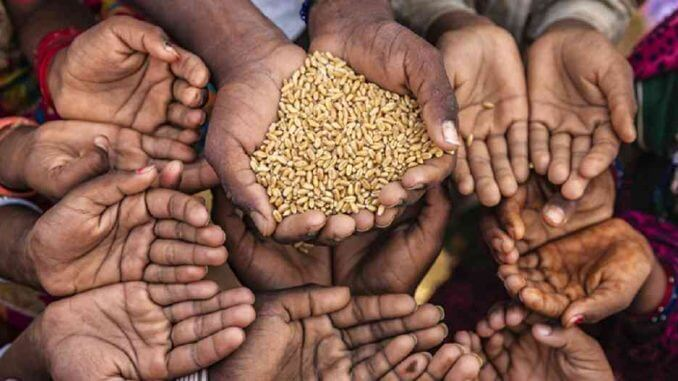

Objetivos generales
Tenemos como objetivo concientizar a la humanidad, mostrando las grandes barreras que existen entre los distintos continentes, los distintos mundos que tienen las personas debido a las situaciones que surgen de forma global, debido a estados, industrias, etc. Mostrar al lector que, debido a ciertos actos benéficos para el mismo, pueden afectar a otros países junto con sus civiles. Así mismo, este blog posee la finalidad de que los lectores puedan documentarse y proponer ideas o soluciones que ayuden a eliminar estos problemas sociales.
El hambre en el siglo XXI
Si bien el hambre no es un virus infeccioso que se pueda propagar por contagio, este se considera como
una enfermedad que avanza cada año, se extiende y afecta una gran parte del planeta. Muchas personas
consideran que esta es una mayor pandemia que el COVID-19 del siglo XXI.
Durante 2020, la cantidad de personas afectadas por la falta de alimentos aumento con respecto al año
anterior (2019): 811 millones de personas sufrieron hambre, siendo 118 millones más que en 2019.
Actualmente, las regiones del mundo más afectadas son Asia, África, América Latina y el caribe. La
desnutrición, es el resultado físico del hambre, afectando también a menores de edad. Cada ano mata a
3,1 millones de niños y niñas menores de 5 anos, según la organización de las naciones Unidas para la
alimentación y la agricultura (FAO). Traduciendo que aproximadamente 8.500 niños y niñas mueren cada
día por falta de alimentos. Los que logran sobrevivir suelen sufrir secuelas durante toda su vida,
tanto en su desarrollo físico como intelectual.
Debido a los conflictos entre países o estados, mientras las guerras se extienden, también crece la
inseguridad alimentaria, lo que sería el hambre. Estos conflictos suelen afectar la producción, el
transporte y el consumo de alimentos hacia los lugares más vulnerables. Por lo que, el hambre se
convierte en una de las consecuencias más directas de las guerras: siendo 6 de cada 10 personas con
hambre viven en un país en conflicto, según Acción contra el hambre.
Durante el año 2020 ocurrieron grandes hechos que afectaron a la sociedad de forma global, siendo el
COVID-19 el más notorio de todos. Esta enfermedad ha afectado a millones de personas que sufren de
hambre, especialmente en los países con crisis humanitarias que ya existían antes de la pandemia. Entre
los factores fundamentales que han perjudicado la situación de estas personas han sido el colapso de
los sistemas de salud y la crisis económica que ha traído el confinamiento.
Finalmente, entre el hambre y las crisis climáticas existen vínculos. Refiriéndose a la inestabilidad y
los eventos climáticos extremos, como olas de calor, sequias, huracanes o inundaciones. Estos fenómenos
naturales afectan negativamente a los ciclos de cultivo, acelerando la desertificación, esterilizando
los suelos y reduciendo el acceso al agua potable y la producción agrícola. En los últimos anos, los
danos ocasionados por fenómenos naturales han estado en aumento. Además, si se continúan con los
niveles actuales, se estima que para el 2040 el cambio climático provocara una pérdida de hasta 50% en
el rendimiento de los cultivos y 700 millones de personas estarán expuestas al riesgo de sequía,
reduciendo en gran parte de la población mundial sin acceso a la alimentación.

¿Cuáles países son los más afectados?
Según datos de la FAO (Food and Agriculture Organization of the United Nations) , difundiendo un mapa
con las zonas que sufren más hambre del mundo, la mayoría de los problemas alimentarios se encuentran
en África y más concretamente en países como República Centroafricana, Namibia y Zambia, entre otros.
También Asia es un continente muy marcado por la inseguridad alimentaria, Corea del norte, Afganistán,
Tayikistán o Iraq son algunas de las regiones más afectadas.
También según datos de la misma organización (FAO)en total en el mundo hay aproximadamente alrededor de
795 millones de personas que padecen hambre. De estas, 780 se encuentran en los países subdesarrollados
y, el resto, unos 15 millones dentro de los países ricos (en el llamado cuarto mundo).

El racismo en pleno siglo XXI
El racismo es uno de los problemas sociales de los que la sociedad se ha estado enfrentando, y esto no
es desde ahora sino hace siglos atrás. Antes de hablar acerca del racismo, ¿Que es la discriminación
racial? Consiste en discriminar a una persona por ser de una determinada raza o por poseer unas
características personales que suelen asociar a una raza determinada (color de piel, la cultura, el
idioma, la forma de actuar, o incluso por tener la nariz de una determinada forma que suele vincularse
a una raza concreta).
Ahora bien, en la actualidad independientemente la etnia de la persona esta puede ser racista o no
frente a personas de diferentes o cualidades características, sin embargo, ¿Quiénes son los
protagonistas del fenómeno racista? Por un lado, tenemos que apuntar a los sujetos o quienes llevan a
cabo las acciones racistas. Evidentemente, a lo largo de la historia, el hombre blanco (europeo) ha
sido quien ha motivado que exista el racismo, bajo la creencia de que son mejores, más inteligentes,
más desarrollados... simplemente por ser de raza blanca. Por otro lado, tenemos que señalar a las
víctimas que históricamente han sufrido el racismo, dando a destacar la población de raza negra como
los afroamericanos o subsaharianos, los judíos o la etnia gitana... En la actualidad, estos son los que
generalmente sufren los mayores casos de racismo.
¿Aun así, porque se puede dar el racismo?, se crea por que los blancos han inventado esta clasificación
de la población para justificar que como ellos son superiores a las otras razas, el hombre blanco
puede: explotarlos, pagarles menos, maltratarlos, no darles derechos y libertades, simplemente por su
ideología de pensar que son superiores.
¿Como concientizar para evitar el racismo?
Esto es algo que no se solucionara de la noche a la mañana, sin embargo, se puede empezar a hacer una
diferencia entre los más jóvenes y los adultos. Entre uno de los métodos para evitar el racismo o
disminuirlo es, genera conciencia, compartir recursos que parecen útiles hacia la comunidad para ayudar
a aprender cómo pueden ayudar a acabar el racismo y la discriminación. Desafiar la discriminación
cotidiana y el racismo, de forma regular esta se puede observar incluso en forma de chistes,
estereotipos o comentarios insensibles, si se presencia algo así de un conocido, amigo o familiar lo
ideal es conversar con esa persona en privado y generar conciencia.
Mediante las redes sociales y la web se pueden apreciar en diversos artículos, paginas u otro tipo de
información racista, en caso de encontrarse con ese tipo de discriminación se debe denunciar dicho
contenido mediante medios que ofrecen estas plataformas para realizar un cambio en su información y
reducir la discriminación.
Diversas guerras y acontecimientos del siglo XXI
A pesar de que en los últimos años ha habido paz en la mayoría de los países eso no evita que hayan
ocurrido diversas guerras entre distintos países, si bien no han sido a gran escala como las guerras
mundiales o guerra fría, han ocurrido diversas guerras que han propiciado acontecimientos desastrosos
como el atentado del 11 de septiembre.
La mayoría de estos conflictos se han dado en Oriente Próximo, en una época que ha estado marcada por
la guerra de Afganistán desde el ano 2001 con la invasión de Estados unidos, la guerra de Irak a partir
de 2003 con una nueva invasión norteamericana y todas las consecuencias derivadas de estos hechos, como
el surgimiento de grupos armados como Dáesh o la creciente confrontación entre Arabia Saudí e Irán por
el control de la región.
No obstante, en África subsahariana sigue habiendo conflictos latentes. El de kivu, en la República
Democrática del Congo, es otra de tantas guerras que afectan a uno de los países más grandes y con más
recursos del continente. En la zona saheliana encontramos también el de Boko Haram, que desde el ano
2009 ha afectado al norte de Nigeria y parte de Chad.
La mayoría de estas guerras no tienen las características de una guerra convencional. Tienen vaivenes
en el tiempo en intensidad, carecen de frentes definidos y en muchos casos se trata de conflictos
asimétricos o con fuerza irregulares -milicias, guerrillas, grupos armados-. Sin embargo, es la
tendencia que se viene observando en cuanto a conflictos contemporáneos.

Consecuencias de las guerras del siglo XXI
Como ya se había mencionado, la mayoría de los conflictos en la actualidad son en ocasionados en el
Oriente Próximo, siendo este uno de los lugares estuvo USA involucrado ocasionando el S11.
En 2001, los terroristas de Al Qaeda derribaron el World Trade Center, símbolo del poder económico.
Atacaron el pentágono, el centro del poder militar. Provocaron un trauma nacional con sus asesinatos
masivos. Y todo esto lo habían hecho con nada más que con cuchillos para alfombras con las que
convirtieron aviones comerciales en armas. Las operaciones estaban dirigidas por un saudí llamado Osama
bin-Laden desde una tienda de campaña en Afganistán. Una humillación sin precedentes para un país que
quizás estaba en el cenit de su poder en ese momento, que se sentía casi invulnerable una docena de
años después de haber ganado la Guerra Fría y tras el colapso de la Unión soviética.
Guerra actual: Rusia invade Ucrania
Uno de los acontecimientos más recientes sin duda es la guerra de Rusia y Ucrania, junto a su invasión
por parte de los soviéticos al entrar en territorio ucraniano. “La expansión de la OTAN y el desarrollo
militar del territorio de Ucrania por parte de la Alianza es inaceptable para Rusia” dijo Putin. La
cuestión de dicha invasión tiene un trasfondo geopolítico de larga data, que tiene con la negatividad
de Rusia a aceptar el acercamiento de la OTAN y de la Unión Europea (UE) a la exrepública soviética, a
la que Moscú considera parte de su identidad y de su espacio de influencia.
La Genesis del actual conflicto se remonta a 2013, cuando el presidente de Ucrania, el prorruso Víctor
Yanukovich, suspendió la firma de un acuerdo de asociación con la UE, prevista el 29 de noviembre, a
causa de las presiones de Rusia, que le ofrecían además importantes contrapartidas económicas por ello,
como la reducción del precio de gas. Este anuncio catalizo el descontento de la población, sobre todo
en el oeste del pais. El 24 de noviembre, decenas de miles de ucranianos se manifestaron contra el
gobierno en la plaza de la independencia (Maiden) de Kiev.
Dicha crisis se agudizo durante 2014. En febrero de ese año las fuerzas de seguridad ucranianas mataron
al menos 100 personas en las protestas. La indignación popular y la brutal represión forzaron la huida
de Yanukovich. Mientras, en Simferópol, la capital de la península ucraniana de Crimea, militantes
prorrusos se enfrentaban a partidarios de la unidad de Ucrania. Al mismo tiempo, militares rusos
camuflados y agentes del espionaje del Kremlin penetraron en Crimea para forzar su anexión a Rusia.